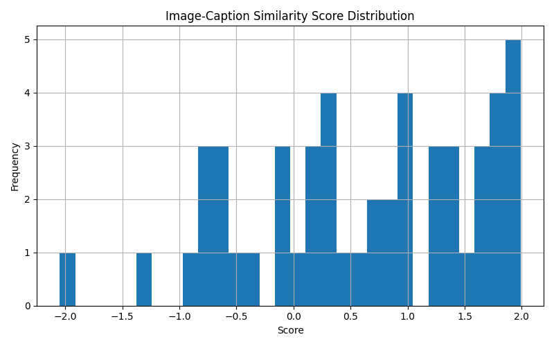

Logging
📍 Logging
All logging related code is under utils/logging.py
The MetricsLogger class collects and logs the following metrics into a JSON file and a score distribution plot:
| JSON Key |
Code Reference |
Description |
system.model_type |
self.model_type |
Type identifier of the loaded model |
system.device |
self.device |
Hardware device used ("cpu", "cuda", etc) |
system.precision |
self.precision |
Numerical precision used (fp32/fp16) |
system.use_ray |
self.use_ray |
Whether distributed processing with Ray was used |
system.use_precomputed |
self.use_precomputed |
Whether precomputed embeddings were utilized |
| JSON Key |
Code Reference |
Description |
performance.total_time_sec |
end_time - self.start_time |
Total time for pipeline execution |
performance.records_processed |
self.records_processed |
Total image-text pairs processed |
performance.batches |
self.batches |
Number of batches processed |
performance.avg_time_per_record_sec |
duration / max(1, self.records_processed) |
Average processing time per record |
performance.peak_memory_mb |
psutil.Process().memory_info().rss (current memory at summary) |
Final CPU RAM usage at summary time |
performance.gpu_peak_memory_mb |
torch.cuda.max_memory_allocated() |
Peak GPU memory usage during processing (CUDA only) |
3. Error Metrics
| JSON Key |
Code Reference |
Description |
errors.download_failures |
self.download_failures |
Failed image downloads |
errors.corrupt_images |
self.corrupt_images |
Unreadable/corrupted images |
errors.processing_errors |
self.processing_errors |
General processing errors excluding download/image failures |
4. Score Statistics
| JSON Key |
Code Reference |
Description |
scores.min |
min(self.score_values) |
Minimum similarity score (4 decimal places) |
scores.max |
max(self.score_values) |
Maximum similarity score (4 decimal places) |
scores.mean |
sum(scores)/len(scores) |
Mean similarity score (4 decimal places) |
| JSON Key |
Code Reference |
Description |
timestamp |
datetime.utcnow().isoformat() + "Z" |
UTC timestamp when summary was written |
Example Output
- JSON Metrics File
{
"system": {
"model_type": "clip",
"device": "cuda",
"precision": "fp16",
"use_ray": false,
"use_precomputed": false
},
"performance": {
"total_time_sec": 4.4,
"records_processed": 51,
"batches": 4,
"avg_time_per_record_sec": 0.0864,
"peak_memory_mb": 4140.39,
"gpu_peak_memory_mb": 3710.46
},
"errors": {
"download_failures": 0,
"corrupt_images": 0,
"processing_errors": 0
},
"scores": {
"min": 0.2275,
"max": 0.4846,
"mean": 0.374
},
"timestamp": "2025-05-19T18:16:34.728415Z"
}
- CSV Results File
url,caption,score,model_type
| Image |
Caption |
Score |
Model |
| https://cdn.leonardo.ai/users/85498bb1-9ae7-4b77-b93e-c66f00011a44/generations/f361771d-0102-482d-a9fe-6913c965a0b6/3D_Animation_Style_2_friendly_real_estate_agent_standing_one_w_0.jpg |
2 friendly real estate agent standing. one with curly brown hair and glasses ... |
0.236572 |
image_reward |
- Distribution plot
